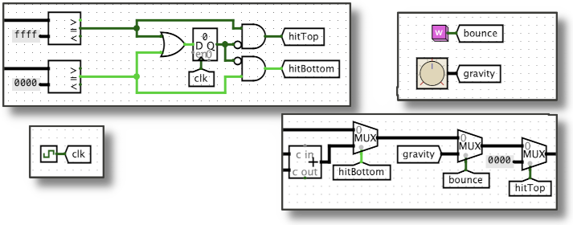

Found in Wiring Library

A pair of identically-labeled tunnels acts like an invisible wire. This is helpful when you need to connect points far apart in the circuit but need to avoid long or confusing tangles of wires. In the examples above, a pair of "hitTop" tunnels connects the output of the AND gate (near the top middle of the circuit) to the selector input of a multiplexor (near the bottom right). The "bounce" and "gravity" tunnels connect the pink button and dial (top right) to other multiplexors (bottom right).
More generally, you can use as many identically-labeled tunnels as you need: the simulator acts as if all of them are joined by a network of invisible wires. And like wires, signals can travel in any direction through tunnels: any of the tunnels in a group can be used at any time as the "source", taking some value and sending it to all of it's siblings. Tunnels can also carry multi-bit signals, but the number of bits must be configured in the properties panel.
Tunnels have just one port, used to send values into the tunnel and/or to take values out of the tunnel. The simulator ensures that all tunnels with the same label all have the same value at all times.
When the component is selected or being added,
Alt-0 through Alt-9 alter its Data Bits
property
and the arrow keys alter its Facing
property.
None - tunnels do not respond to being poked.
Supports VHDL and Verilog synthesis.